Metadata Enrichment
🎯 Lab Goals#
- Understand Primary Grail Fields: what they are and why they’re ideal for tenant-wide controls (IAM, Partitioning, Segmentation, Cost Control).
- Assess current metadata coverage: with a provided Enrichment Overview notebook to see presence of
dt.security_context,dt.cost.costcenter,dt.cost.product,dt.host_group.id. - Configure K8s-based enrichment and confirm mutated pods carry new metadata.
- Handle exceptions (pod-level/workload granularity)
🧪 Exercises#
Understanding Primary Grail Fields#
-
In Segments, create a segment with
dt.host_group.id. Observe how the Primary Grail Field propagates across all datapoints (metrics, logs, spans, events).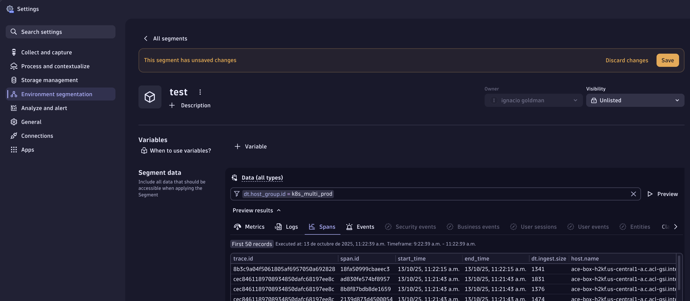
Note
Entities will appear in Segments with Smartscape 2.0 (Planned availability: January 2026). Until then, use Management Zones for entities.
-
Still in the segment, copy a span-specific attribute (e.g.,
span.name).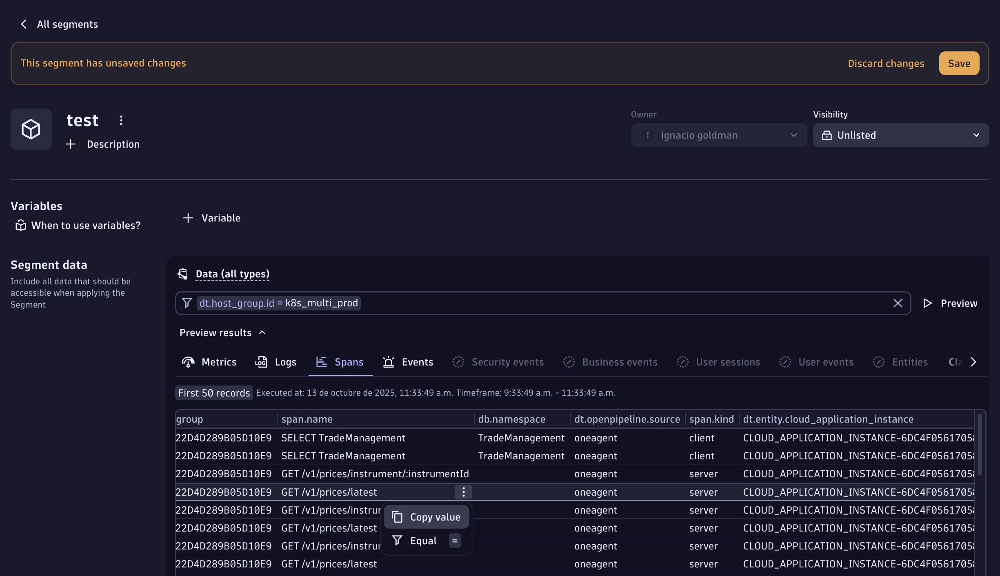
-
Run the segment again, filtering where
span.nameequals the value you copied.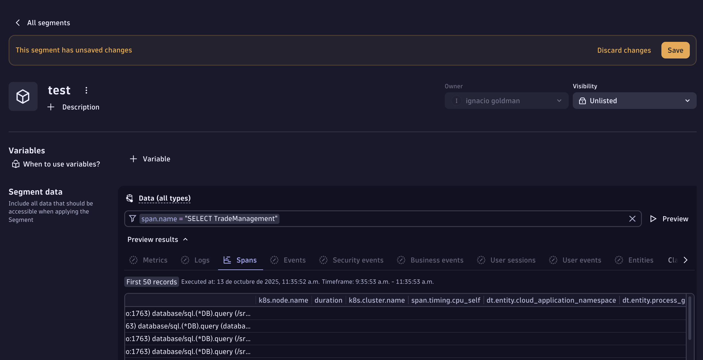
Success
Primary Grail Field propagates across every signal, unlike other attributes, making it ideal for tenant-wide configurations (Data Access, Partitioning, Segmentation, Cost Control).
In 3rd-Gen, each datapoint is treated independently, offering much greater flexibility in how data is: Grouped (via Buckets), Filtered (Segments), Secured (Access Control / IAM), Allocated (for cost tracking, DPS). Every signal, such as logs, spans, traces & metrics, should be enriched with the correspondant metadata. Entities are treated in a similar way to any other signal type.
To meet the Slice & Dice requirements (remember the table provided during the previous exercise), we must enrich every signal (spans, logs, metrics, events) with:
dt.security_context = easytradedt.cost.costcenter = easytradedt.cost.product = easytrade
This makes the metadata consistent across signals, so you can cleanly apply IAM boundaries, Cost Allocation, Buckets, and Segmentation based on those fields.
Enriching our K8s Cluster#
How?#
Enrichment varies by technology. For the Easytrade team, the stack is Kubernetes on Azure.
- See the D1 CoE guide per technology: Enrichment — Technologies & Entities.
- In this lab, we’ll focus on Kubernetes enrichment: Enrichment — Kubernetes
Enrichment Coverage Analysis#
-
Copy the Enrichment Overview Notebook to your tenant, re-run the queries, and review your customer’s status.
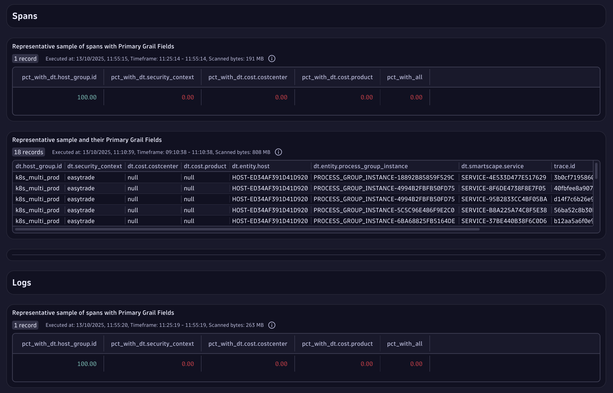
This notebook helps you and the customer quickly assess enrichment coverage (0–100%). Aim for 100%, meaning every datapoint is enriched with meaningful metadata for downstream configuration.
In our current data,
dt.host_group.idis present (legacy Classic usage), butdt.security_context,dt.cost.costcenter, anddt.cost.productare missing.As outlined in the K8s Enrichment and K8s Telemetry Enrichment DT Docs best practices here are several approaches you could execute:
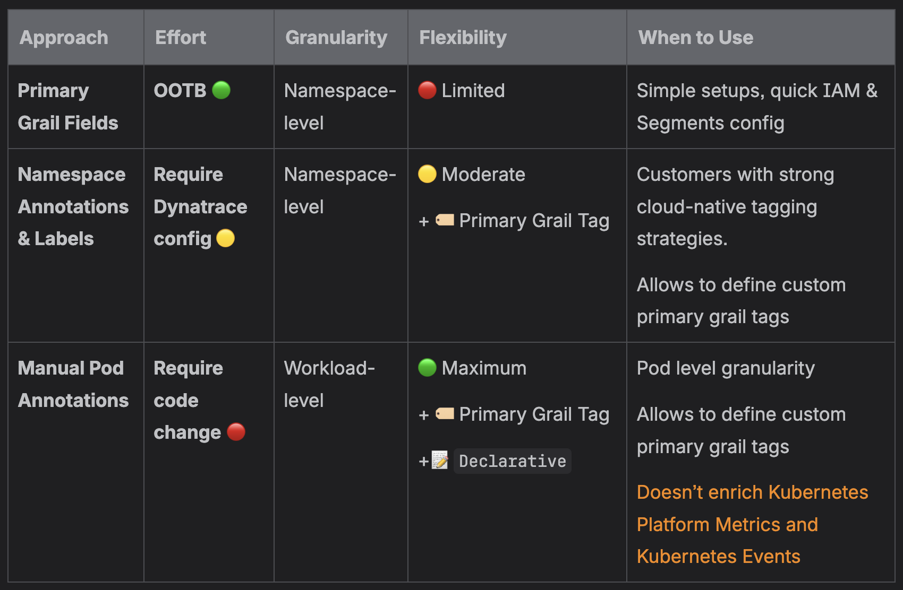
[Approach 1] Primary Grail Fields#
-
Open a Segment and use the namespace to retrieve all datapoints.
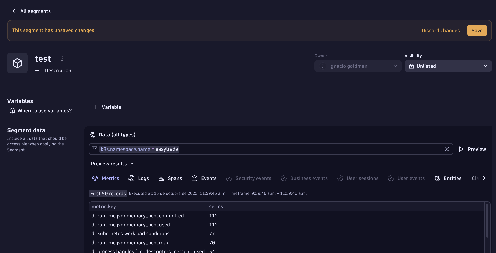
For a quick win, you can use the namespace directly as the Primary Grail Field. You can also use
k8s.namespace.namein your IAM boundary configuration.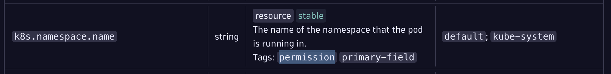
[Approach 2] Cloud-native approach#
We’ll rely on namespace labels/annotations, a common way customers organize cloud-native environments. With this approach, the customer has more flexibility to adjust dt.security_context, dt.cost.costcenter, dt.cost.product, based on their standards
-
In the Kubernetes app in Dynatrace, review the customer’s standards for labels and annotations.
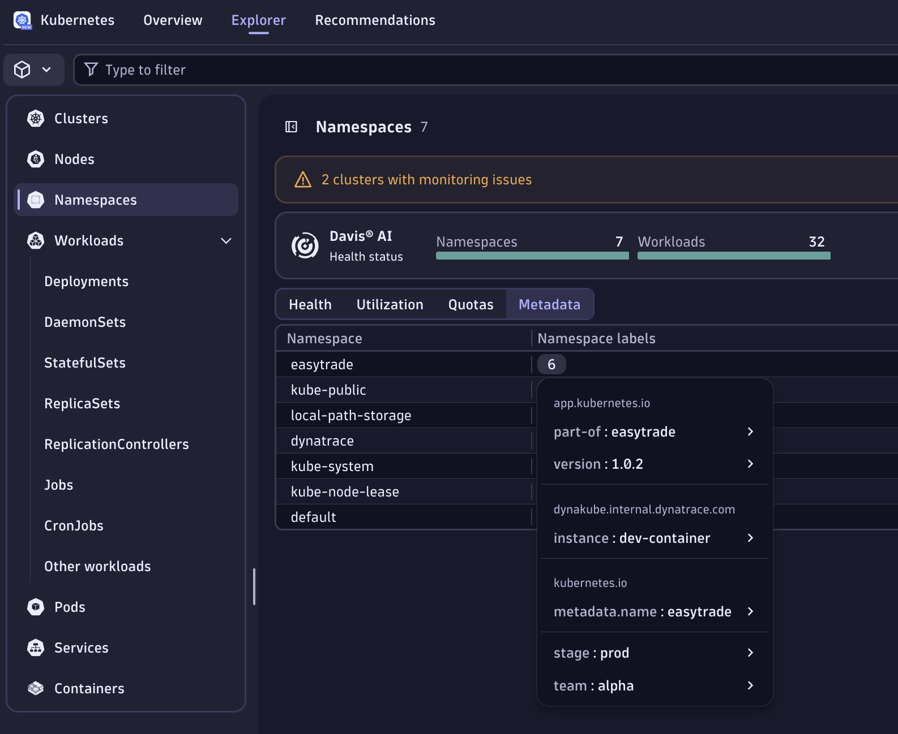
Tip
Treat this as a pre-investigation: propose a mapping to Dynatrace values, then validate and get approval from the customer before proceeding.
-
Use the label
kubernetes.io/metadata.nameas the value fordt.security_context.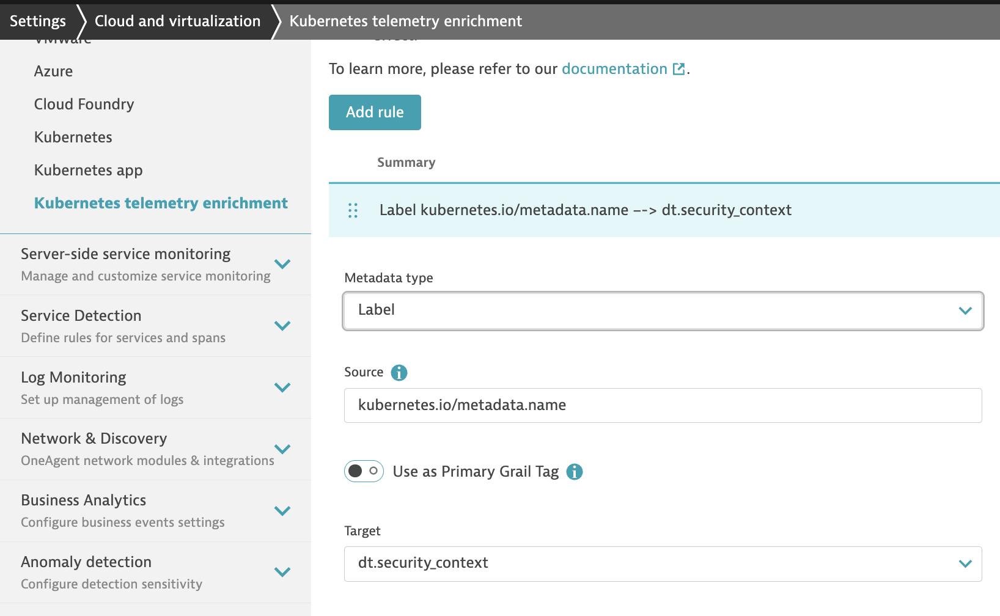
Warning
Select label, not annotation.
Debugging#
The Dynatrace Operator mutates pods in the namespace, adding dt.security_context in this case.
-
Run
kubectl get pods -n easytradein your cluster, find the accountservice pod, and copy its name.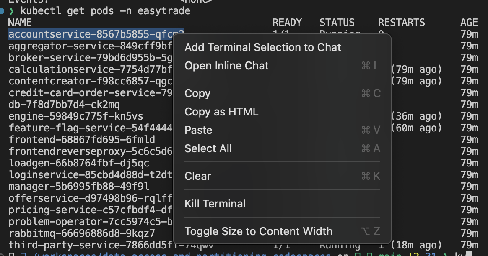
-
Describe the pod:
kubectl describe pod <accountservice-pod-name> -n easytrade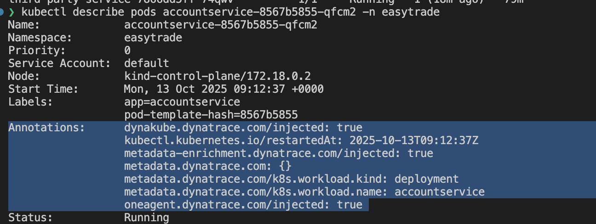
If you don’t see
dt.security_context, the pod was created before the rule applied. Restart it so the Operator can mutate the spec. -
Restart the accountservice deployment:
kubectl -n easytrade rollout restart deployment/accountservice -
Check the new pod, you should now see
dt.security_contextin the pod definition.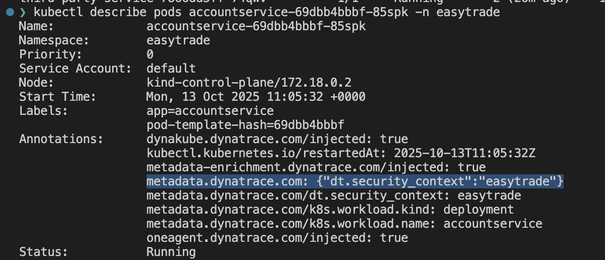
(repeat steps 8 & 9).
!!! warning
The Dynatrace Operator queries the settings API once every 45 mins. After creating or modifying rules, if you want to ensure inmediate effects, you can restart the it with:
kubectl -n dynatrace rollout restart deployment dynatrace-operator
-
Return to the Enrichment Overview Notebook and re-check the status. Grab a
span.id, paste it in the query, and confirm the workload name.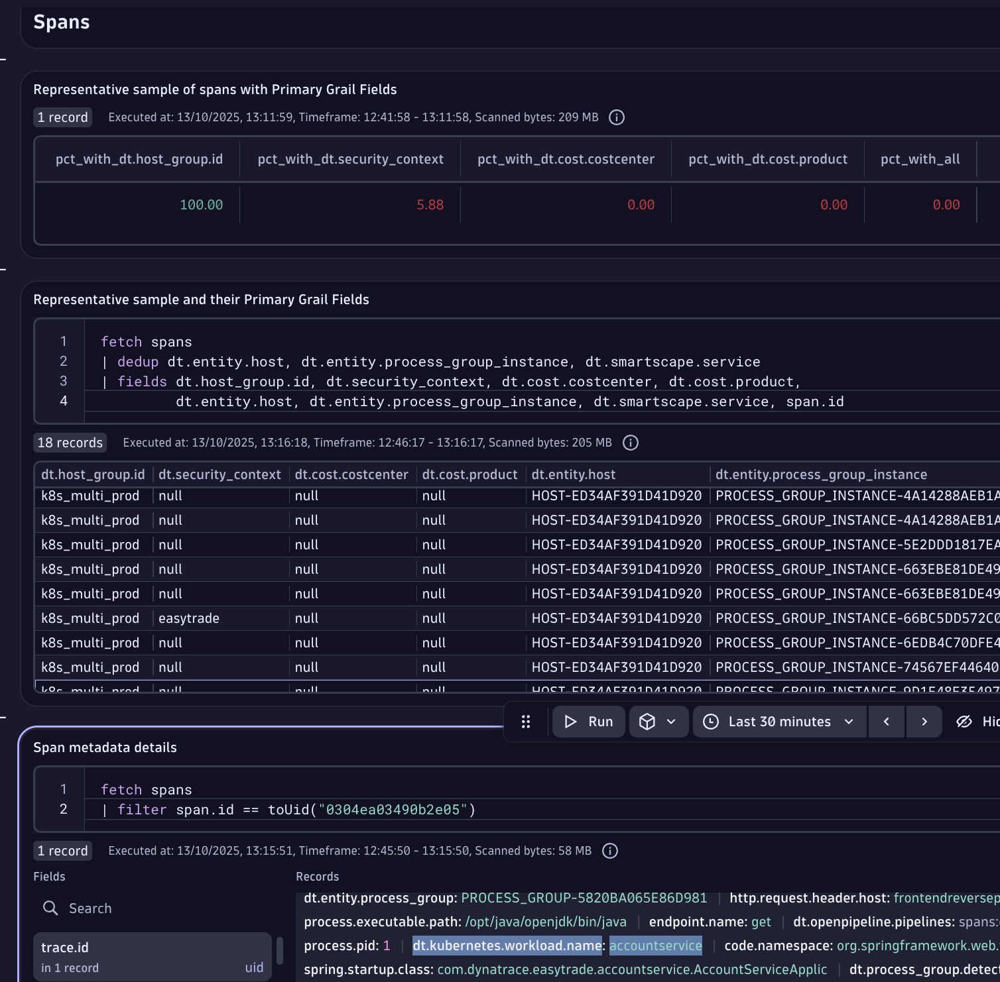
-
Configure
dt.cost.costcenteranddt.cost.product, plus any other attributes the Easytrade team needs.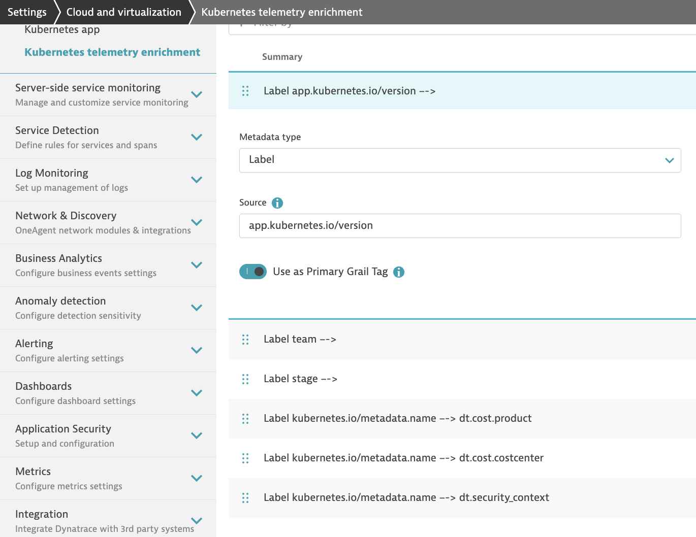
! note
For those other attributes (team, stage, app.kubernetes.io/version), as they are not going to be connected to any of the main ones (security context & costs), you can mark them as Primary Grail Tags. We will see this later... -
Restart all deployments in the
easytradenamespace:for d in $(kubectl -n easytrade get deploy -o name); do kubectl -n easytrade rollout restart "$d" done -
Re-check the Enrichment Overview Notebook.
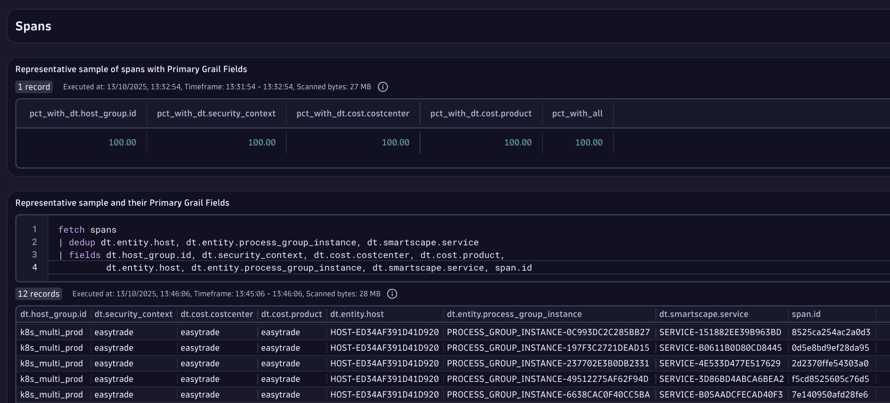
Also check logs. Not all logs may be enriched (e.g., cluster-level logs that infra teams care about).
Primary Grail Tags#
As you may have seen, we've also added other attributes that could be extremely useful for the customer, such as the apps version.
-
The customer could create visualization of metrics, or exception maps comparing different version of their apps
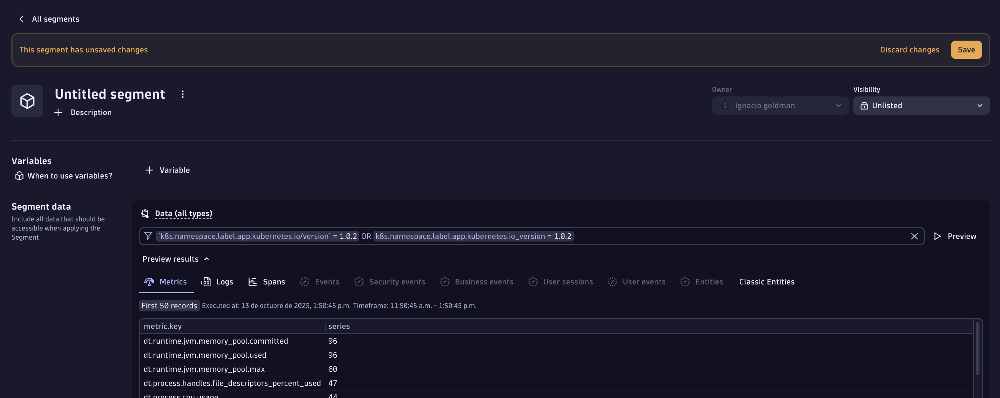
Tip
Consider also Primary Grail Tags, apart from the default enrichment of dt.security.context, dt.cost.costcenter and dt.cost.product. Think of the dimesions defined previously, or any relevant metadata that the customer could use in Dynatrace
[Approach 3] Pod-level granularity#
Context: loginservice is the only Easytrade microservice not managed by the team we’re helping with the PoC. There’s a request to keep its Data Access separate.
Namespace-level enrichment only goes so far. To target a single workload, we’ll set the attributes at the pod level (e.g., dt.security_context = loginservice).
-
In your IDE, open
.devcontainer/apps/easytrade/k8s-manifests/loginservice.yamland add these pod template annotations:annotations: # Custom tags for Dynatrace metadata.dynatrace.com/dt.cost.costcenter: "loginservice" metadata.dynatrace.com/dt.cost.product: "loginservice" metadata.dynatrace.com/dt.security_context: "loginservice"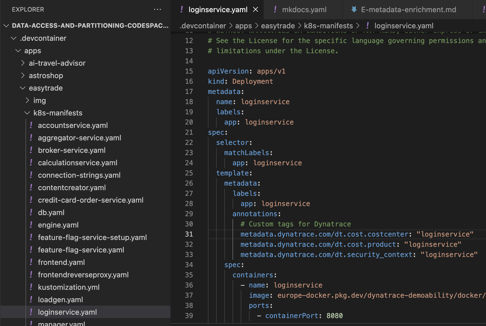
-
Apply the manifest:
kubectl -n easytrade apply -f .devcontainer/apps/easytrade/k8s-manifests/loginservice.yaml -
Verify new pods have the updated fields:
kubectl get pods -n easytrade kubectl describe pod <loginservice-pod-name> -n easytrade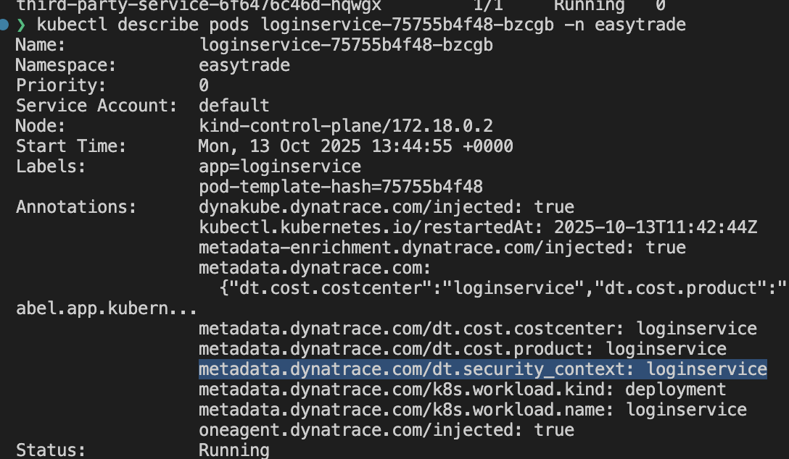
-
Check the Enrichment dashboard again.
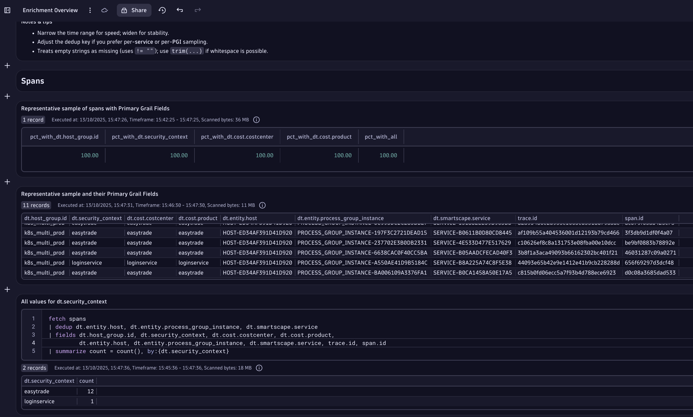
🌱 Closing Up#
Lab Recap & Next Steps#
- You identified Primary Grail Fields and why they matter for tenant-wide controls.
- You measured metadata coverage on a representative sample (spans/logs) and tracked % with dt.security_context, dt.cost.costcenter, dt.cost.product, dt.host_group.id.
- You configured K8s enrichment (namespace labels → PGFs) and restarted workloads so pods were mutated with the new fields.
- You handled an exception at pod level (loginservice) by adding PGF annotations in its manifest and applying the change.
- You validated before/after in the Enrichment notebook and noted gaps (e.g., some cluster-level logs).
What this enables... - dt.security_context is now your anchor dimension to define groups, policies, and access boundaries for least-privilege access. - dt.cost.costcenter & dt.cost.product are ready for cost allocation and reporting.
Resources#
Dynatrace Official Documentation:
D1 CoE:
We've meet the Enrichment requirements for a K8s environment. How would this work for a Standard OA, or a Cloud environment. Check the following resources in the CoE page:
- D1 CoE | Enrichment of Standard OneAgent deployment
- D1 CoE | Enrichment for Cloud, WIP... contact the CoE in case further information is needed